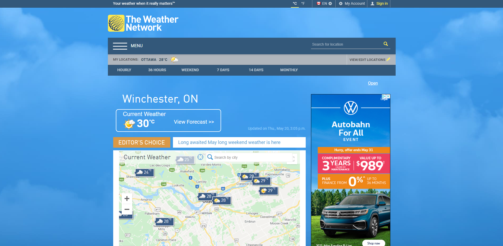

User Interface Survey
Please answer the following questions based on the user interface of the website below.
All questions are based on the
Weather Network
's website.

Question 1
Overall, this user interface is:
Excellent
Good
OK
Bad
Terrible
Question 2
How many clicks does it take to get the weather forecast for your area?
Please select a number
0
1
2
3
4
5
6 or more
Question 3
Which of the following user interface aspects improve your productivity when using this site? (select all that apply)
Hamburger Menu
Button Styles
Font Choice
Colour Scheme
Content Layout
Question 4
Please enter the name of another weather source you use.
Question 5
Now that you have navigated the Weather Network website, would you consider using it again?
Yes
No
Undecided
Thank you for completing the survey!
If you have any additional comments, please enter them below:
SUBMIT
Site created and designed by Athos
Click
here
for more websites created by Athos